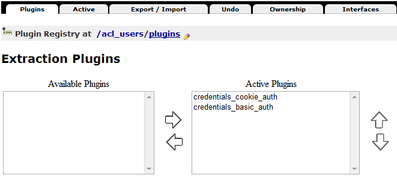

感謝您對「自由軟體鑄造場」的支持與愛護，十多年來「自由軟體鑄造場」受中央研究院支持，並在資訊科學研究所以及資訊科技創新研究中心執行，現已完成階段性的任務。 本網站預計持續維運至 2021年底，網站內容基本上不會再更動。
也紀念我們永遠的朋友 李士傑先生（Shih-Chieh Ilya Li）。
也紀念我們永遠的朋友 李士傑先生（Shih-Chieh Ilya Li）。
用自由軟體 Plone 來架設網站 (3)— 內部設定
Created at Monday, 25 April 2011 18:50 Last Updated on Wednesday, 12 October 2011 11:34
在前篇文章裡，我們實際編輯 buildout.cfg 設定檔，安裝一個擴充模組，延伸 Plone 既有的內容管理能力，加上地圖操作及編輯的功能，並認識 Plone 預設的 Archetypes 內容型別框架，了解 Schema、Field、Widget 的相依關係。接著，我們將說明客製化 Plone 網站的方式，並介紹如何使用 GenericSetup 來管理 ZODB 的設定值。客製化 Plone 網站的方式，有兩大途徑，一種是在網頁介面進行設定，稱為 TTW (Through The Web)，另一種是在檔案系統裡撰寫程式碼，稱為 TTF (Through The Filesystem)。前者的好處是直覺而快速，比較容易入門學習，但是能調整的地方有限，後者的好處之一，是日後可以重覆沿用設定值，系統化地維護網站的成長，當然，這種方式能讓你擁有最大的調整空間，也代表你要了解更多系統的運作細節。
TTW 設定方式
網頁介面的管理方式，主要是在 ZMI 環境進行，整個 ZODB (或 Zope 系統) 可以想像成一個樹狀結構，它的根目錄稱為 root Folder，通常以「/」符號來代表。如圖1 所示，在物件清單上可以看到多種物件類型，Plone Site 是其中的一種物件類型，在畫面下方有一排操作按鈕，這些物件都可以搭配「Rename」、「Cut」、「Copy」、「Delete」等按鈕，進行基本的操作，就像使用檔案總管一樣。
▲ 圖1 ZMI 根目錄的物件清單
「Import/Export」是比較特別的按鈕，搭配 Plone Site 來操作的話，它可以將整個網站匯出成為一個 ZEXP 檔案，再從另一個 Plone Instance 匯入。以 mysite 為例，選擇「Save to file on server」，它會匯出成為 /home/user/Plone/zinstance/var/instance/mysite.zexp 檔案，只要再把它放到 /home/user/Plone/zinstance/var/instance/import 目錄裡，就會在匯入項目清單裡出現，如圖2 所示。
▲ 圖2 Import/Export 操作畫面
匯出匯入的功能，目前只支援同版本的 Plone Instance，它是個方便的工具，但不是資料升級的萬靈丹。當然，個別的子目錄或是物件，也都可以執行這樣的操作，不過，要確認 portal_types 裡，物件型別資訊有啟用「Implicitly addable」的選項，如圖3 所示。如果沒有啟用，那麼就只能匯出，而不能匯入這類物件型別。
▲ 圖3 Folder 的物件型別資訊
acl_users 帳號管理
Plone Site 是 Zope 裡的一種物件類型，也就是可視為「某程度獨立的兩個系統」，因此兩者各自擁有獨立的帳號管理工具，也就容易理解了。雖然各自獨立，但使用的機制相同，而且 Zope 的管理帳號會凌駕 Plone 之上。它們都是使用 Pluggable Auth Service 的機制，簡稱為 PAS，開發者可以在這個機制裡，加上 LDAP、CAS 等驗證服務的支援，甚至寫出依照 IP 位址來驗證帳號登入的擴充模組。
▲ 圖4 /acl_users 的物件清單
剛安裝的 Zope 系統，預設只會有 admin 帳號，這樣的帳號具備最高的權限，可以管理所有物件，包括 Plone Site 在內，之後在 Plone Site 裡新增的帳號，以 mysite 為例，只會存在於 /mysite/acl_users 的 source_users 裡。
▲ 圖5 /mysite/acl_users 的物件清單
在 acl_users 裡的每一個物件項目代表一個 PAS plugin，每個 plugin 是 PAS 的功能單位。比較特別是 plugins 這個物件，它負責管理 PAS 所有的 interface 啟用資訊，還有啟用的順序。舉例來說，在 Extraction Plugins 設定畫面裡，預設有兩個啟用的 plugin，順序在上的 credentials_cookie_auth，代表它的驗證順序在 credentials_basic_auth 之上。

▲ 圖6 Extraction Plugins 設定畫面
Undo 復原管理
不小心在 Plone 網站裡誤刪資料時，管理員可以在短時間內，其他使用者還未大量修改系統之前，進入 ZMI 介面執行「Undo」的恢復動作。
「Undo」頁籤位於 ZMI 介面的中上方。設定畫面會依時間順序，列出系統執行過的動作。以刪除動作為例，通常會以「manage_delObjects」的關鍵字做記錄，請尋找最近的一筆資料記錄，在它的左方會看到方框，勾選後，點擊頁面下方的「Undo」按鈕，就可以執行復原的動作。
▲ 圖7 Undo 設定畫面
Zope 系統把每一個操作動作稱為 transaction，它們代表系統在不同時點的「特定狀態」，或稱為 snapshot。這些 transaction 資料記錄在 ZODB 裡，通常一段時間後，需要把 transaction 記錄清除，這樣的清除動作稱為 pack。
▲ 圖8 Database Management 設定畫面
清除時可以指定 transaction 的存留天數，在 ZMI 裡 /Control_Panel/Database/main 可以看到設定畫面，以天數 0 為例，代表把所有 transaction 都清空，以天數 7 為例，代表存留最近一週的 transaction 記錄。執行 pack 之後，會發現 Data.fs 的檔案大小變小了。
pack 是重要的資料庫維護動作，除了 ZMI 後台介面之外，Site Setup 前台介面的 Maintenance 裡，也有同樣功能的管理畫面。
▲ 圖9 Site Setup 的 Maintenance 畫面
content_type_registry
Plone 系統支援 FTP 和 WebDAV 通訊協定，可以想像，這是變通的結果，因為物件系統和檔案系統之間，必須進行一系列的對應動作。另外，使用 collective.uploadify 或 collective.quickupload 擴充模組，可以批次上傳檔案到 Plone 系統，上傳時同樣需要進行對應動作。
以 collective.quickupload 為例子，這個模組又稱為 Plone Quick Upload，支援 Javascript 或 Flash 操作介面，並以 status bar 顯示上傳進度。假設我同時選了 01.png 和 02.flv 兩個檔案，上傳到 mysite 網站，Plone 系統如何知道它們分別要存成哪種物件類型呢?
▲ 圖10 Plone Quick Upload 設定畫面
在 /mysite/content_type_registry 裡，Content Type Registry 就是在處理上述的問題，它維護一個對照清單，記錄怎樣的條件下，上傳的檔案使用哪種物件類型。你可以新增想要的設定值，也可以調整它們的順序。
在 ATImage_ext 項目裡，它的 Extensions 指定為「jpg jpeg png gif」，代表這四種副檔名的檔案，上傳時都會以 Image 型別儲存。在 image 項目裡，它的 Content type 指定為「image」，代表屬於 image 這種類型的資料，上傳時都會以 Image 型別儲存。
▲ 圖11 Content Type Registry 設定畫面
另外一個相關的設定項目是 mimetypes_registry，裡面記載 image/gif、image/jpeg、imag/png 之類的設定值，你也可以在這裡新增想要的 MIME 格式資料。
portal_actions
Plone 網站的 Site Map、Contact、Rules、Sharing 等選項，被稱為 (CMF) Action，依照屬性，又歸類在不同的 (CMF) Action Category 裡，例如 Site Map 歸屬在 site_actions 裡。更多例子，請參考圖12 的對照簡表。之所以會有 CMF 字樣，是 Zope 早期以 Content Management Framework 為模組名稱，建立一系列網站工具軟體，簡稱為 CMF，後來 Plone 以 CMF 為基礎發展至今，在系統裡仍然常見到這個縮寫字。
▲ 圖12 Action Category 對照簡表
想要修改或新增選項，可以在 ZMI 裡 portal_actions 進行設定，例如要取消 Accessibility 選項，請到 portal_actions 的 site_actions，找到 accessibility 項目。
▲ 圖13 Plone Actions Tool 設定畫面
在 CMF Action 設定畫面裡，有數個設定欄位，想要取消顯示的話，將「Visible」選項取消勾選，再按「Save Changes」就行。
▲ 圖14 accessibility Action 設定畫面
想要在 site_actions 裡新增 Action 的話，從下拉選單選擇 CMF Action，如圖15 所示。仿照前面的欄位設定值，要先填寫「Title」欄位，例如「Office Location」，「URL (Expression)」欄位可以是「string:${globals_view/navigationRootUrl}/office-location」，「Permissions」欄位選「View」，將「Visible」欄位勾選，儲存後完成。搭配之前的 Plone Map 模組，就可以新增一個提供地圖資訊的頁面。
▲ 圖15 新增 CMF Action 畫面
設定 RSS
Plone 的 RSS 功能，以 Collection 為基礎，請先在 Plone 前台的根目錄，新增一個 Collection 項目，「Title」欄位填寫「My Site - RSS feed」，在「Category」頁籤裡的「Language」選擇「Language neutral」，將「Settings」頁籤裡的「Exclude from navigation」選項打勾。
存檔之後，再到根目錄的「Contents」頁籤，勾選剛才新增的 Collection 項目，點擊「Rename」按鈕，將它的 id 改為「site-feed」，如圖16 所示。
▲ 圖16 更改 Collection 的 id
進入 site-feed 這個 Collection 項目，點擊「Criteria」頁籤，在「Field name」欄位，選擇「Item Type」項目，點擊「Add criteria」按鈕，如圖17 所示。
▲ 圖17 新增 Criteria 欄位條件
在「Item Type」的「Values」欄位選擇想要提供 RSS 的型別，例如「Event」和「News Item」，在「Set Sort Order」的欄位選擇「Effective Date」，勾選「Reverse」，點擊「Save」按鈕，如圖18 所示。
▲ 圖18 設定 Criteria 欄位條件
此時，已經可以從「https://localhost:8080/mysite/site-feed/RSS」這樣的網址，看到 site-feed 的 RSS 資料，如圖19 所示。
▲ 圖19 RSS feed 畫面效果
同樣的，我們可以為 mysite 網站新增一個 RSS Action。再次進入 ZMI 的 /mysite/portal_actions/site_actions，新增一個 id 為 rss 的 CMF Action，這次請將「URL (Expression)」欄位設定為「string:${object/@@plone_portal_state/portal_url}/site-feed/RSS?set_language=${object/@@plone_portal_state/language}」，其他設定值仿照前面範例就行，如圖20 所示。
▲ 圖20 RSS Site Action 設定畫面
GenericSetup
前文裡已經提過，在 ZMI 進行的設定修改，會被儲存在 ZODB 裡。由於 ZODB 使用 Python 內建的 pickles 函式來存取資料，存取物件的資訊會參照檔案系統裡的 Python 程式，如此一來，這部份的 Python 程式必須小心維護，以免更名改版的動作，造成無法找回存進 ZODB 的物件。
Plone 利用 GenericSetup 機制，協助管理員處理上述的問題，它可以把網站設定值，以 XML 格式進行匯入或匯出，我們就可以安心地利用 ZMI 來設定網站，不必擔心找不回 ZODB 裡的設定結果。
想要匯出 mysite 網站的設定值，請到 ZMI 的 /mysite/portal_setup，點擊「Export」頁籤，如圖21 所示。
▲ 圖21 portal_setup Export 畫面
點擊頁面最下方的「Export all steps」按鈕，這會下載一個 setup_tool-20110415093906.tar.gz 之類的壓縮檔案，解開之後，會看到許多 .xml 檔案，它們被稱為 profile 檔案，以 XML 格式記錄系統的設定值。
▲ 圖22 profile 檔案畫面
以 properties.xml 檔案為例，它記錄了網站的基本資訊，例如網站名稱、摘要描述、站長電郵資訊等。
▲ 圖23 properties.xml 內容
你可以在 ZMI 裡，看到上述 properties.xml 的對應設定效果，請到 /mysite 的「Properties」頁籤，它把 XML 內容的每一項設定值，以網頁方式呈現出來，如圖24 所示。
▲ 圖24 ZMI 裡 mysite 的 Properties 內容
結論
在本文裡，我們瀏覽了 ZMI 裡的入門項目，包括 PAS、transaction、pack、content type registry 等技術名詞，透過建立 Action 和 RSS 等範例，進一步地體驗 ZODB 如何把前台與後台串連起來，同時，也認識 GenericSetup 的基本原理，初見 XML 格式的 profile 設定檔，這些都是 Plone 開發架構的重要基礎。
事實上，GenericSetup 不只用於設定值的匯入和匯出，開發擴充模組時，常利用 Extension Profile 的方式，以 Plone 預設的 Base Profile 為基礎，每次只增加或修改少數的 Profile 內容，系統化地維護設定值。等到移除擴充模組時，系統則要想辦法「恢復」成之前的樣子，也就是舊版的 Profile。可是，系統有辦法「記得」之前的樣子嗎? Plone 又是如何處理這類的問題呢? 想知道如何透過 TTF 方式來客製化系統嗎? 欲知詳情，且待下回分曉。
You may be interested in the following articles:
- 用自由軟體 Plone 來架設網站(10)－連接資料庫 - 2011-08-05
- 用自由軟體 Plone 來架設網站(9)－多媒體結合 - 2011-07-25
- 用自由軟體 Plone 來架設網站(8)－內容查詢 - 2011-07-12
- 用自由軟體 Plone 來架設網站(7)－版型調整 - 2011-06-28
- 用自由軟體 Plone 來架設網站 (6)－動態網頁 - 2011-06-09
- 用自由軟體 Plone 來架設網站 (5)－元件架構 - 2011-05-20
- 用自由軟體 Plone 來架設網站 (4)－建立專案 - 2011-05-04
- 用自由軟體 Plone 來架設網站 (2)— 內容管理 - 2011-04-11
- 用自由軟體 Plone 來架設網站 (1)— 基礎安裝 - 2011-03-21
Special


Open Source Software Foundry‧ Best Viewed with IE7.0 or Firefox2.0 above, 1024x768 Resolution. E-Mail：contact@openfoundry.org
Address：No.128, Sec.2, Academia Rd., Institute of Information Science, Academia Sinica, Nangang District, Taipei City 11529, Taiwan (R.O.C).
Privacy Policy. Terms-of-use
Address：No.128, Sec.2, Academia Rd., Institute of Information Science, Academia Sinica, Nangang District, Taipei City 11529, Taiwan (R.O.C).
Privacy Policy. Terms-of-use